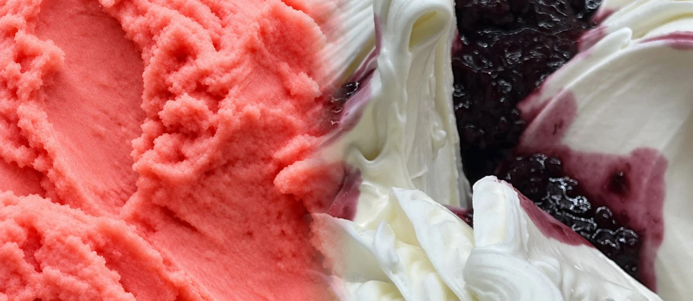
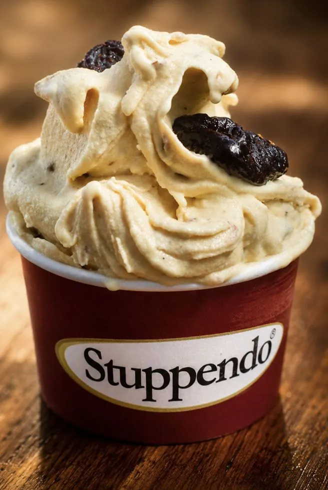
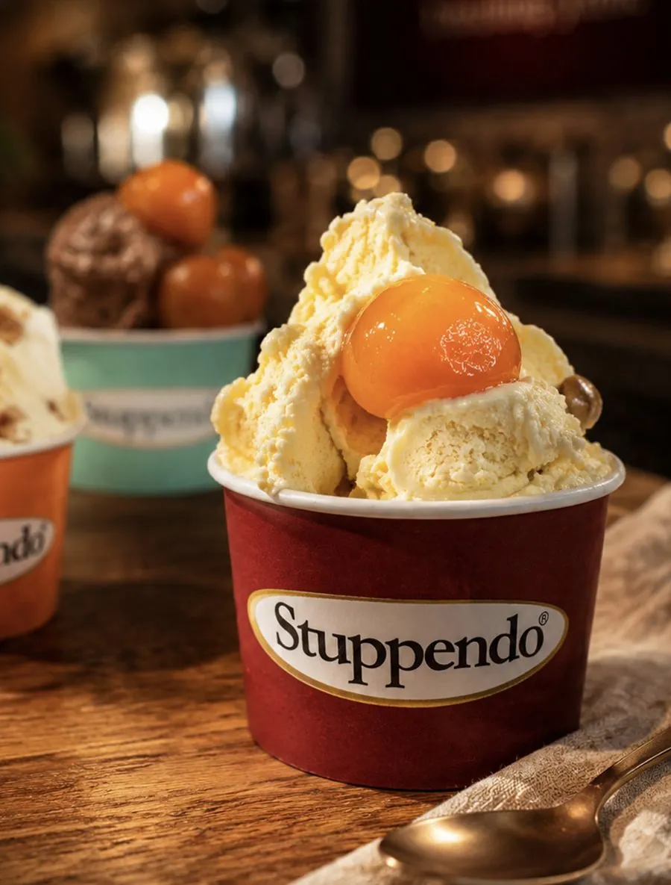
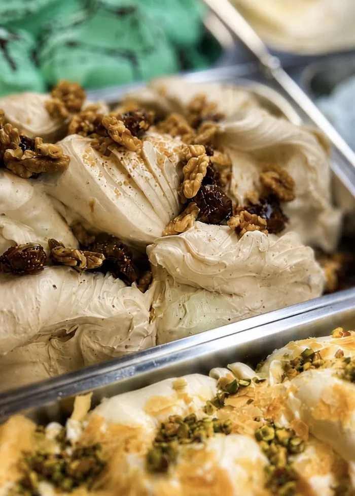
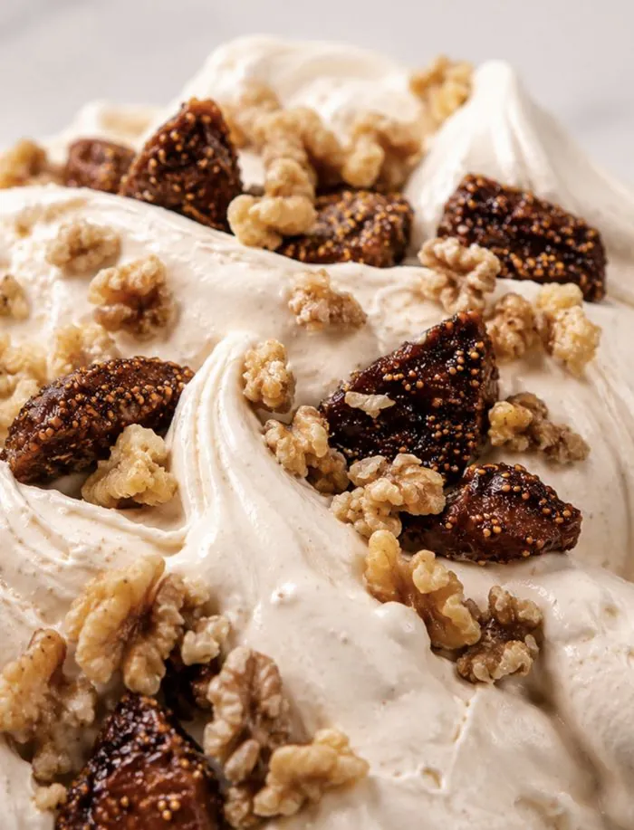
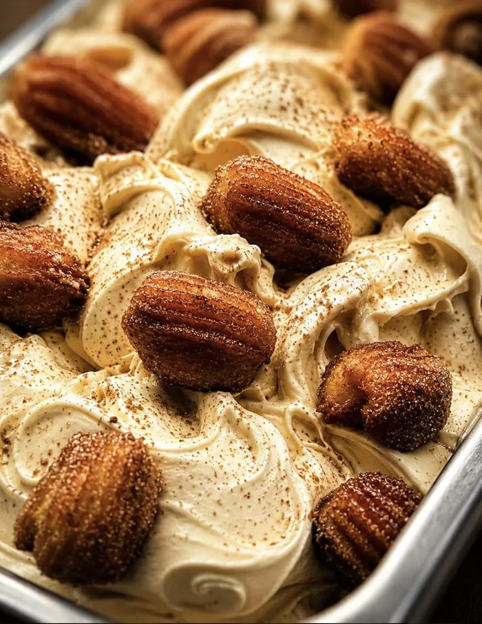
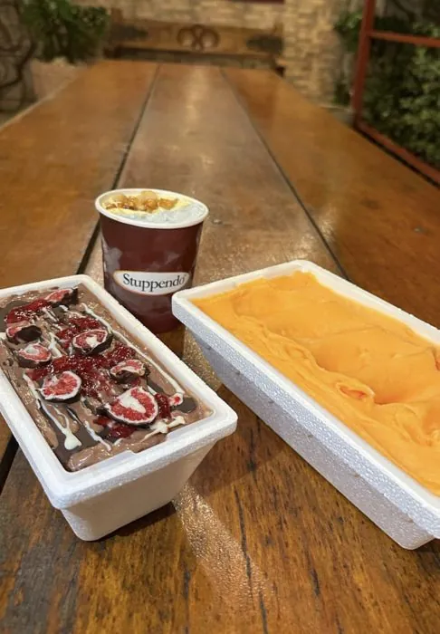

Início / Sobre nós
Tradição italiana, criação brasileira
A Stuppendo nasceu em 1996 da tradição da gelateria italiana e do jeito brasileiro de receber.
Mais que uma gelateria,
uma tradição
Desde 1996, em Moema, a Stuppendo faz gelato de verdade, com ingredientes escolhidos e a mão italiana. Hoje são 8 lojas em quatro estados, e a receita continua a mesma.
Gelatos artesanais, ingredientes selecionados e cuidado em cada detalhe. Um lugar gostoso de estar.
Encontrar uma loja →



Feito à mão,todos os dias
O jeito Stuppendo
Técnica italiana, um lugar gostoso de estar
01
Gelato feito à mão todos os dias
Técnica italiana e mais de 45 sabores que mudam com a estação.


02
Ingredientes selecionados
Gelatos artesanais e cuidado em cada detalhe.
03
Espaços acolhedores
Uma equipe treinada para receber bem, em lojas de quatro estados.

30Anos de tradição
desde 1996
desde 1996
45+Sabores de gelato
feitos à mão
feitos à mão
8Unidades
em quatro estados
em quatro estados
Stuppendo Gelateria
Venha viver a Stuppendo
Gelato artesanal italiano em oito lojas.
Encontrar uma loja